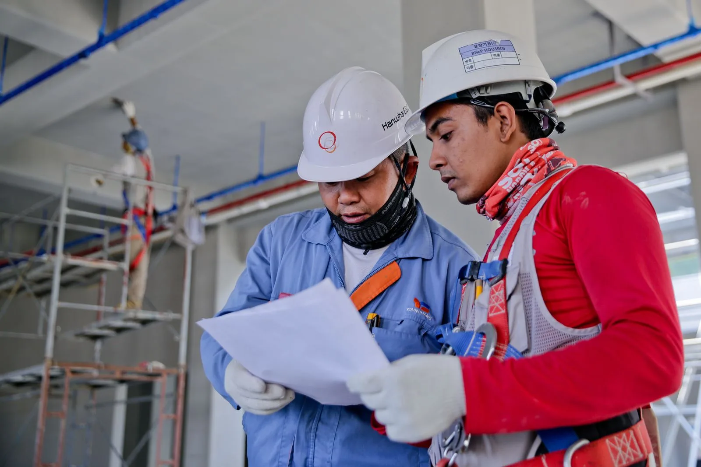
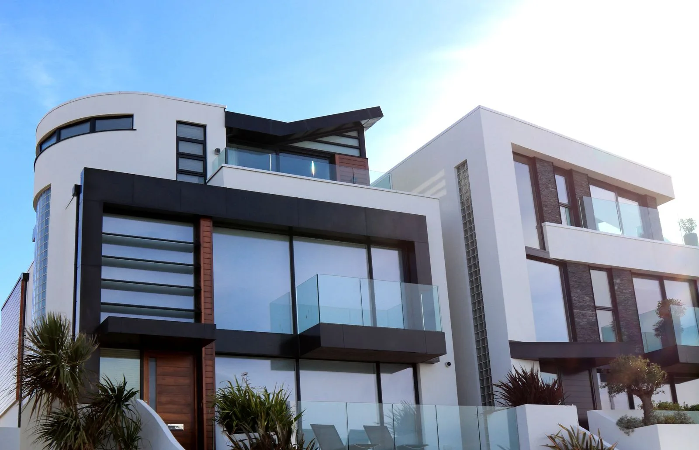

BC
CONSTRUCTION
CONSTRUCTION
Studies & preparation
↗02Building & renovation
↗03Supervision & coordination
↗PROJECT PERSPECTIVE
BUILD
FOR PURPOSE.
From the first studies, connect technical constraints, future occupants’ needs and site conditions.

A CLEAR METHOD
- 01
Scope
Purpose, constraints, documents and stakeholders.
- 02
Prepare
Studies, schedule and coordination of works.
- 03
Supervise
Review points and documented decisions.
- 04
Hand over
Acceptance and project handover records.
Let’s talk
LET’S TALK CONSTRUCTION.
Try this journey with fictional details. The request stays in your browser; no message is sent.